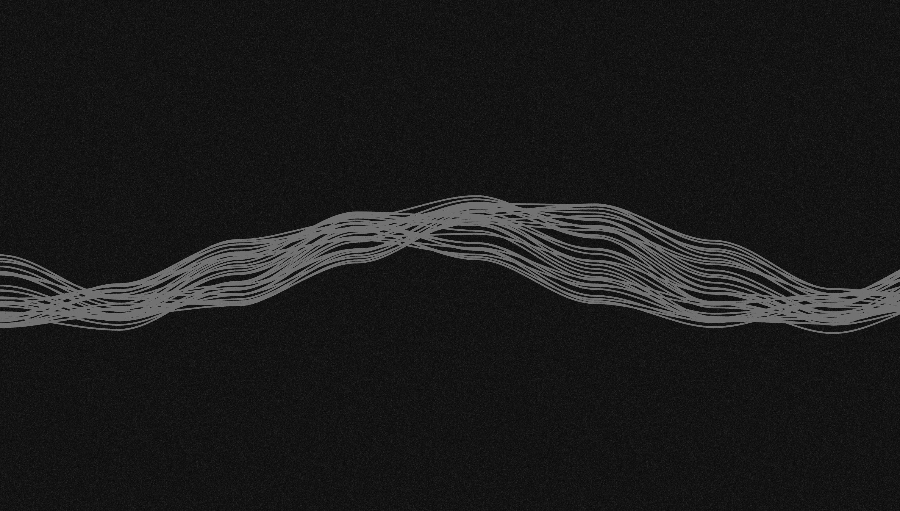
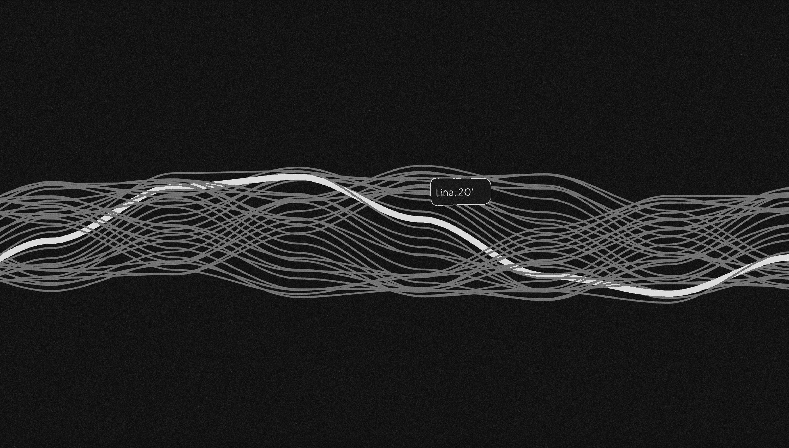
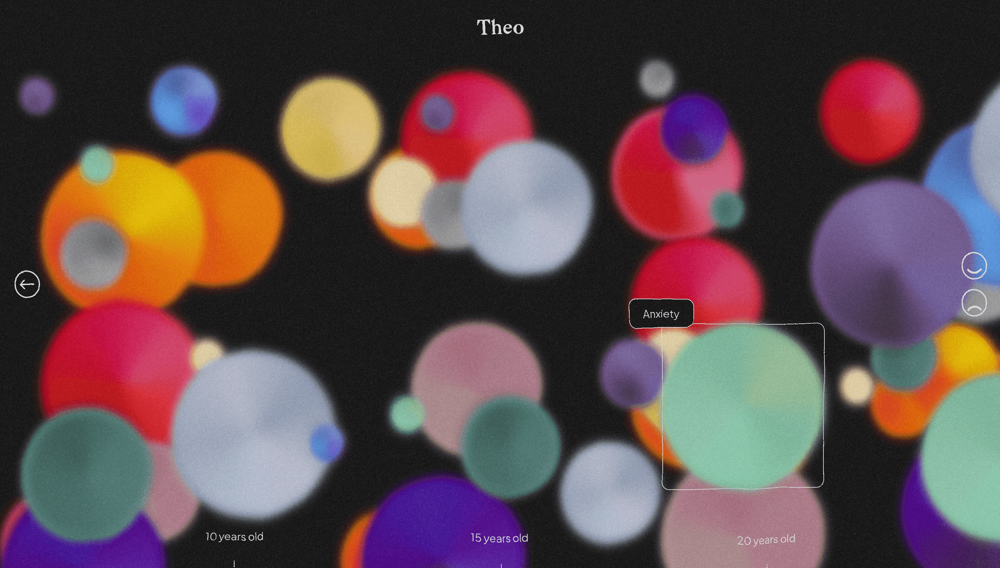
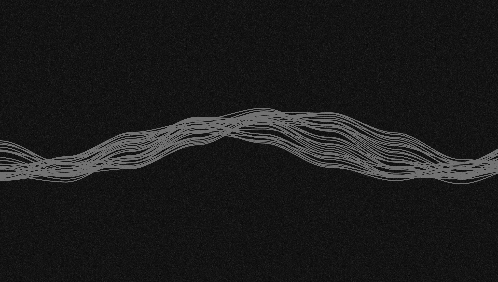
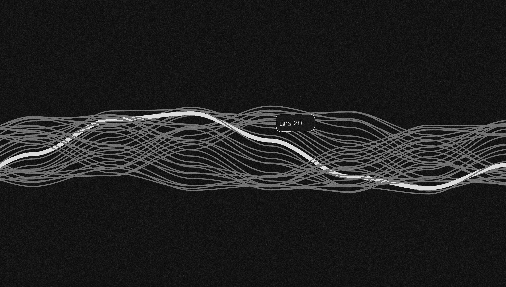
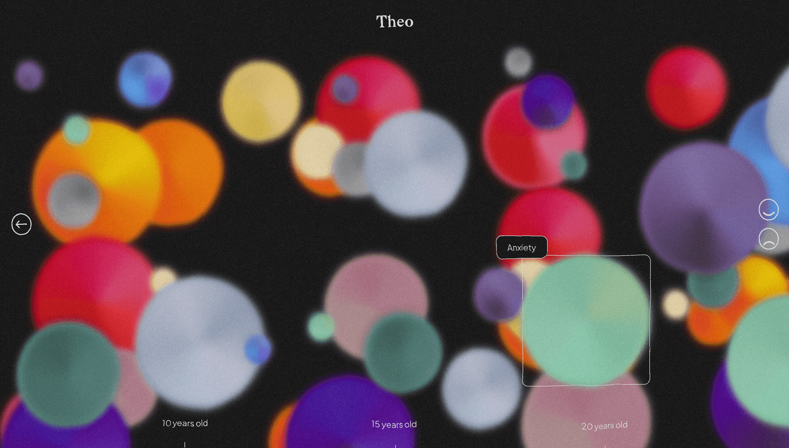
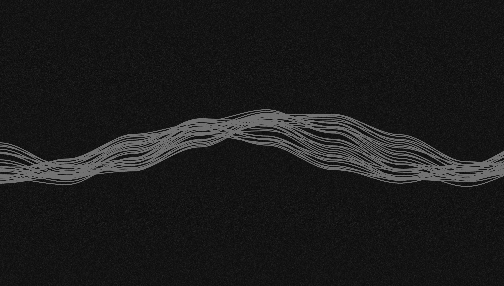
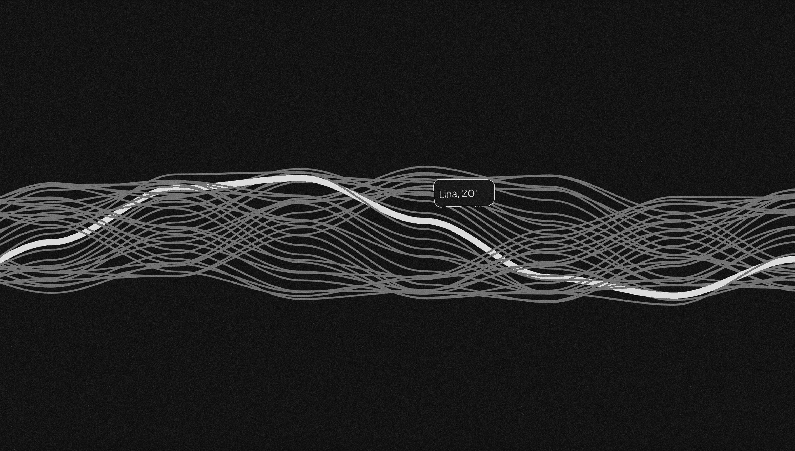
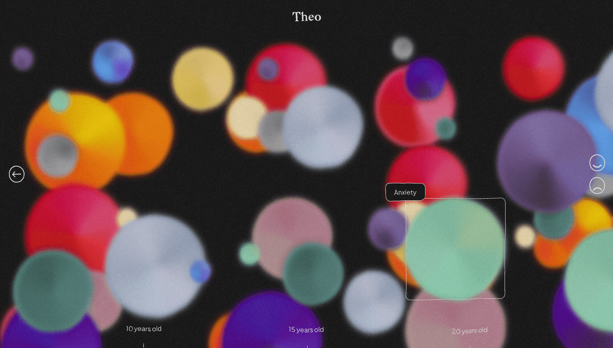

Graphic introspection on the emotions of Gobelins' BDDI 2023 class.
Project type : Website
Date : 2022
Context : Group project at Gobelins
Technologies used : HTML, CSS, JavaScript
Description :
The goal of this project was to work as a group to create a data visualization website. Our final product
was a graphic introspection on the emotions of the BDDI 2023 class.
The idea emerged from a shared desire to work on the human aspect of the subject. We wanted to explore the
paradox between the quantifiable—statistics—and the seemingly unquantifiable—emotions. Our group consisted
of two developers, Victor Cango and myself, and a designer, Agathe Bosch.
For this project, we used the Parcel bundler to create a practical setup that updates in real time.
JavaScript allowed us to create animations and structure the data collected from the 34 students, which we
were able to export to CSV. The Paper JS library helped us with vector manipulation.


